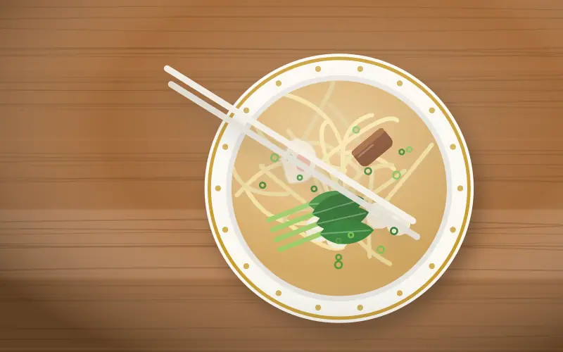

麵 · Noodles平EVERYDAY
Legendary · Shau Kei Wan · Eastern
On Lee Noodle
安利魚蛋粉麵
Fish-ball & fish-cake noodles魚蛋魚片頭河
~$40typical spend
75/100
HK Cheap Eats Value Score · Great valueEstimated from the editors’ rating, price vs similar noodles places and MTR access. Portion size and customer reviews aren’t scored yet. How it’s calculated
- Hours
- 07:30 – 19:30
- Best for
- Lunch
- Nearest MTR
- Shau Kei Wan 筲箕灣 · 1 min walk
- Pay with
- Cash
- Cuisine
- Noodles 粉麵
- Area
- Shau Kei Wan 筲箕灣 · Eastern 東區
- Status
- Unverified
- Source
- HK Cheap Eats editors
- Listed
- 19 Nov 2026
- Price last checked in store
- Not yet
Picture is an illustration, not a photo of this restaurant. Spotted a wrong price or hours? Suggest a correction in the app.